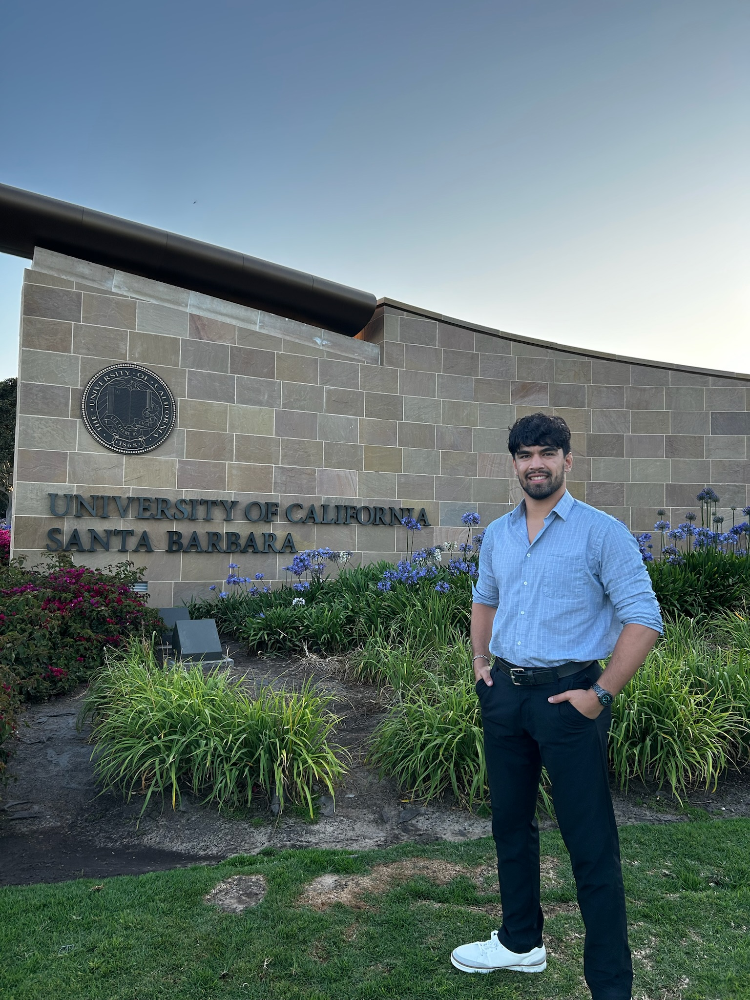

MS, Data Science student at San José State University. Previously, graduated BS, Statistics and Data Science from the University of California, Santa Barbara
Student Researcher at the Wildfire Interdisciplinary Research Center, where I conduct data analysis on Fire Weather, collaborating across teams and leading independent projects.My current interests lie in Applied Machine Learning in Real-World Systems and Data-Driven Environmental Analysis. Specifically, I’m focused on building advanced data collection systems and leveraging AI/ML tools to produce impactful research for global benefit.